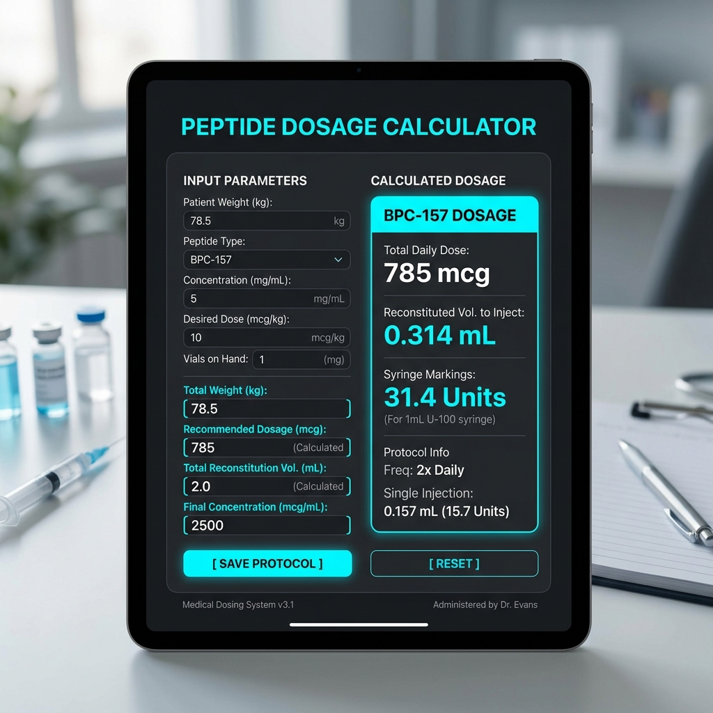

If the phrase "reconstitution" makes you instantly sweat and regret not paying more attention in high school chemistry, you are not alone. Let’s be honest: taking a tiny vial of powder and turning it into an exact liquid measurement sounds like the kind of thing you should need a Ph.D. for. But unless you plan to go back to school for the next eight years, you’re going to need a shortcut.
Enter the peptide calculator.
In this comprehensive guide, we are going to break down exactly how to reconstitute peptides, how to mix peptides without ruining them, and why a peptide mixing calculator is going to become your new best friend. We will also touch on how to use a peptide price tool to ensure you are getting the best value for your research.
Picture this: you've finally sourced your research materials. You’ve even used a handy peptide price tool to make sure you got the best value per milligram. You’re ready to begin your research, but then you stare at the vial.
How much bacteriostatic water do I add? If I add 2mL, how many micrograms are in every tick mark on the syringe? Wait, is this a 0.5cc syringe or a 1cc syringe?
Suddenly, you are spiraling into "math panic."
This is where things go wrong. As noted in clinical pharmacology literature: "Precision in the reconstitution of lyophilized compounds is paramount; improper dilution ratios directly correlate with decreased compound efficacy and stability."
In plain English? If you mess up the math, you’re wasting your time, your money, and potentially compromising your entire protocol. Peptides are incredibly precise molecular structures. A miscalculation of a few units on a syringe can mean the difference between an optimal dose and an ineffective one.
Before we get into the nitty-gritty of how to mix peptides, we need to understand what we are dealing with. When you order peptides for research, they typically arrive in a small glass vial as a white, puck-like disc or powder. This is known as lyophilized (freeze-dried) powder.
Why freeze-dried? Because peptides in a liquid state are fragile. They degrade quickly at room temperature and are susceptible to damage from light, heat, and agitation. Lyophilization removes the water content under a vacuum, creating a stable product that can survive shipping.
However, your body (or your research subject) cannot utilize dry powder. It must be returned to a liquid state using a sterile solvent—most commonly Bacteriostatic Water (BAC water). This process is called reconstitution.
Before you even look at a peptide calculator, you need to ensure you have the correct supplies. Proper reconstitution requires a sterile environment and specific tools.
This is not tap water. This is not bottled spring water. BAC water is highly purified sterile water containing 0.9% benzyl alcohol. The benzyl alcohol acts as a preservative, preventing the growth of bacteria within the vial for up to 28 days after reconstitution.
You will need two types of syringes:
Cleanliness is next to godliness, especially in peptide science. You need 70% isopropyl alcohol pads to wipe down the rubber stoppers of your vials before every single needle puncture.
Let’s simplify how to reconstitute peptides into a few easy steps.
Wash your hands thoroughly. Clear a clean workspace. Gather your lyophilized peptide vial, your BAC water, your mixing syringe, and your alcohol prep pads. Keep everything aggressively sterile. We are doing science here, not baking a cake.
Remove the protective plastic caps from both the peptide vial and the BAC water vial. Take an alcohol prep pad and wipe the rubber stoppers of both vials vigorously for a few seconds. Let them air dry. Blowing on them does not speed it up; it just covers them in the bacteria from your breath, which completely defeats the purpose of the alcohol swab.
Uncap your large mixing syringe. Pull back the plunger to draw air into the syringe equal to the amount of BAC water you plan to use (e.g., if you need 2mL of water, pull 2mL of air). Inject this air into the BAC water vial; this equalizes the pressure and makes drawing the water much easier. Turn the BAC water vial upside down and draw the exact amount of water you need.
(Wait, how much water do you need? We’ll get to the calculator part in a second).
Take your syringe full of BAC water and insert the needle into the rubber stopper of the peptide vial. Crucial rule: Do not spray the water directly onto the powder like you are power-washing a driveway. Peptides are fragile little molecular chains. If you blast them with a jet of water, you can damage the bonds (a process known as shearing).
Instead, angle the needle so the water trickles gently down the inner glass wall of the vial. It should slowly pool at the bottom and begin dissolving the powder.
Once all the water is in the vial, remove the syringe. DO NOT SHAKE. Shaking damages the peptide bonds and causes frothing, which makes it incredibly difficult to draw an accurate dose. Gently swirl the vial in a circular motion until the powder dissolves entirely and the liquid is perfectly clear.
Store the reconstituted peptide in the refrigerator immediately. Most peptides lose their potency if left at room temperature after being mixed.
Now, let's address the elephant in the room: the math.
Let's say you have a vial containing 5mg (5,000mcg) of a peptide. You add 2mL of BAC water. Your research protocol calls for a dose of 250mcg. You are using a 1mL (100 unit) insulin syringe.
Which tick mark on the syringe do you pull the plunger to?
If you are trying to do that math in your head while holding a needle, you are asking for trouble. A peptide mixing calculator does the heavy lifting for you.
A good peptide calculator requires three simple inputs:
The calculator instantly runs the conversion math and tells you exactly which tick mark (or how many units) to pull back to on your specific syringe. It’s foolproof. It takes the anxiety out of the process, leaving you confident that your measurements are accurate to the microgram.
Before you even get to the reconstitution stage, you have to source your peptides. The market is flooded with vendors, and pricing can vary wildly. A peptide price tool is an invaluable resource that compares the cost-per-milligram across different suppliers.
It helps you ensure you are getting laboratory-grade materials at a fair price. When combined with a peptide calculator, you are optimizing both your budget and your dosage accuracy.
Reconstituting peptides doesn't have to be a source of stress. By understanding the basic principles of sterile handling, treating the fragile molecules with respect, and utilizing modern tools like a peptide calculator, you can ensure your research is safe, precise, and effective.
So next time you prep for research, skip the scratchpad math. Use a calculator, swirl gently, and leave the complex equations to the folks in the lab coats.